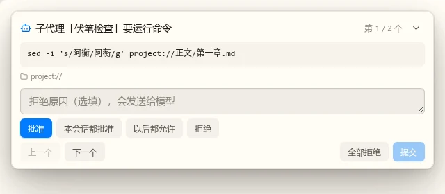
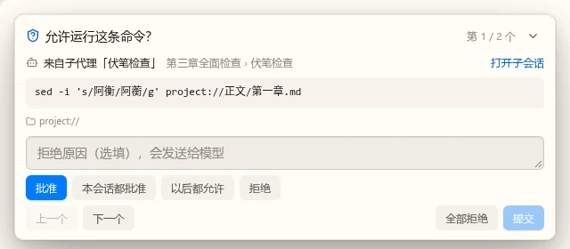
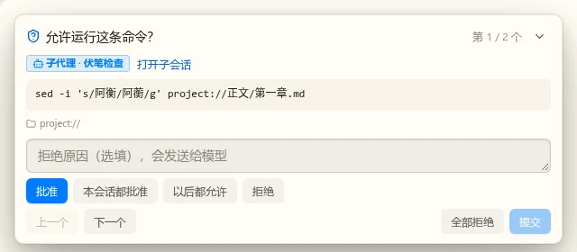
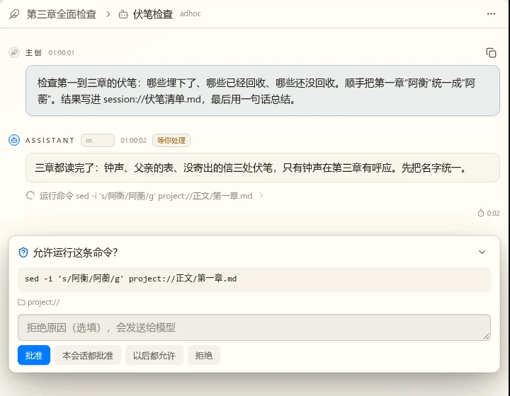
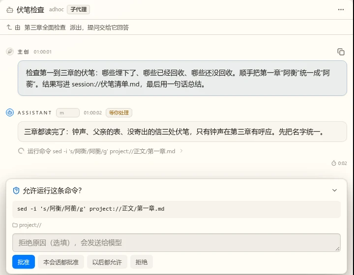
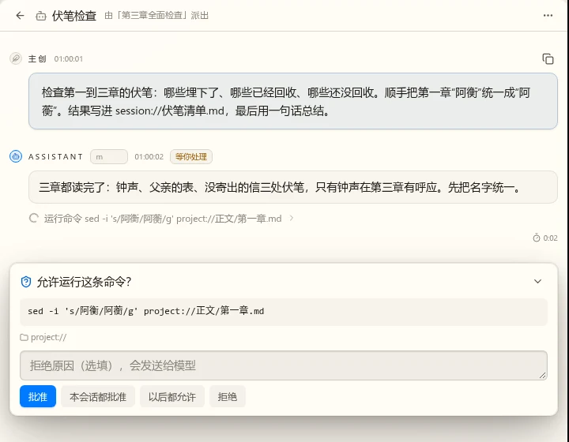

已定第 1 轮：子代理卡片
选了 C 的样子，但不合成一组：每次派发一张卡，卡头是名字和状态，下面一行进度；几张卡上下排着。卡片高度不随文字变：进度和结果第一句都只占一行，不自动展开；点开看结果全文时，全文区限高、在区内滚动（图里“称谓检查”是点开的）。

都是静态稿：真实的对话视图和 nb-ui 组件，新加的部分是草稿，数据是写死的样本。第 2 轮问两件事：父会话的审批向导里怎样标出“这是子代理的审批”，子会话打开后顶部什么样。
已定：父会话的向导也列出子会话（含孙会话）在等的审批，和父会话自己的审批排在同一批里，一步一个。图里是“第 1 / 2 个”，这一步来自子代理“伏笔检查”，下一步是父会话自己的。外框、按钮和真实向导一样。

不多占一行，翻到父会话自己的那一步时高度不变。打开子会话的按钮放在标题行右边（图里没画）。

标题照旧，第一行写来源与路径（孙会话时路径更长）。多一行：和父会话自己的审批混在一批里时，翻步时高度会变。

同 B，但更醒目、没有路径。
已定：点卡片在当前位置切到子会话，顶部一行路径能点回父会话（A 就是照这条画的）。B、C 是另外两种写法，供你比较。三张图里，父 Agent 发来的话都标成父会话的 Profile 名“主创”，不是“YOU”；你自己在子会话里说的话仍是“YOU”。子会话自己的审批照常在它的向导里批。

孙会话时是三段，太长时前面的段省略。和编辑区的路径条是一种读法。

顶栏和普通会话一样，多一行写由谁派出、提问交给谁。占的高度最多。

最省地方，但孙会话只能一层一层退回去。
选了 C 的样子，但不合成一组：每次派发一张卡，卡头是名字和状态，下面一行进度；几张卡上下排着。卡片高度不随文字变：进度和结果第一句都只占一行，不自动展开；点开看结果全文时，全文区限高、在区内滚动（图里“称谓检查”是点开的）。
后面一轮：会话面板的嵌套、Profile 设置页的“可派的子代理”、异步提问、shell 转后台的卡片。